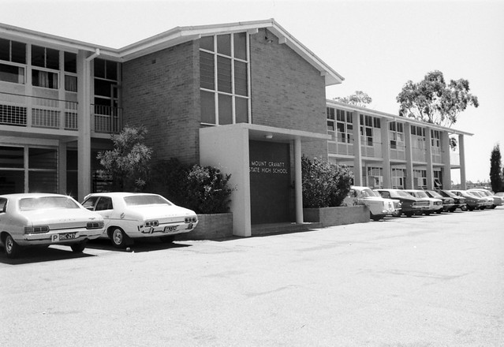

⛏I need a school in my base.
ベースに学校が必要です。
/aɪ niːd ə ˈskuːl ɪn maɪ beɪs/
- need a → 語末 /d/ が弱形 /ə/ に連結 [ˈniːdə] ニーダ
アイ ニーダ スクール イン マイ ベイス

⛏I need a school in my base.
ベースに学校が必要です。
⛏I built it next to the school.
学校の隣にそれを建築しました。
⛏A school of fish swims near.
魚の群れが近くを泳いでいます。
I built two schools in my village.
私は村に2つの学校を建てました。
These wooden schools are made of oak blocks.
これらの木製の学校はオークブロックでできている。
He schools the players on mining efficiently.
彼はプレイヤーたちに効率的に採掘することを教え込んでいます。
This instructor schools everyone in crafting basics.
この講師はみんなにクラフトの基本を教え込んでいます。
I schooled myself in redstone mechanics before building this contraption.
このコントラプションを作る前に、レッドストーン機構について学習しました。
She schooled the new player on mob spawning rules.
彼女は新しいプレイヤーにモブ生成のルールを教え込みました。
Having been schooled in building techniques, I constructed the castle.
建築技術を学んだので、その城を建設しました。
Well-schooled players know how to find diamonds quickly.
よく訓練されたプレイヤーはダイヤモンドを素早く見つけ方を知っています。
Schooling new players in crafting takes practice.
新しいプレイヤーにクラフトを教えることには練習が必要です。
I'm schooling my friend in survival mode strategies right now.
今、友人にサバイバルモードの戦略を教えています。
⛏A school of tropical fish appeared in the ocean.
熱帯魚の群れが海に現れました。